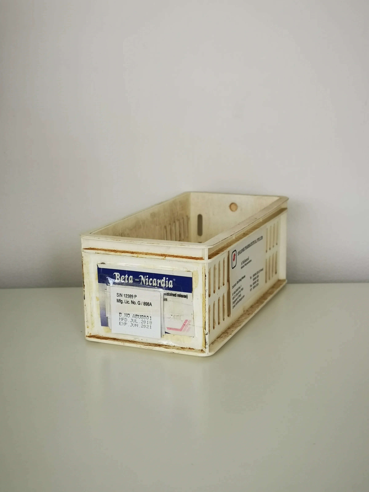

This guide covers payment methods for international aesthetic wholesale orders, helping professional buyers navigate their procurement processes effectively.
When sourcing aesthetic products for clinics, spas, or retail distribution, understanding payment methods for international aesthetic wholesale orders is crucial. The right payment strategy can streamline your procurement process, minimize risks, and enhance supplier relationships. As a professional buyer, navigating the complexities of international transactions can be daunting, especially when dealing with varying currencies, regulations, and supplier requirements.
This article aims to equip you with the knowledge needed to make informed decisions about payment methods. By understanding the nuances of international transactions, you can ensure that your orders are processed smoothly, allowing you to focus on growing your business.
Key Takeaways
- Choose payment methods that offer security and fraud protection to safeguard your investment.
- Understand currency conversion fees and how they impact your overall costs.
- Evaluate supplier payment terms to align with your cash flow and reorder planning.
- Consider using escrow services for high-value transactions to mitigate risks.
- Maintain clear communication with suppliers regarding payment expectations and timelines.
What this guide covers
- Understanding payment methods
- Buyer scenarios and needs
- Comparing payment options
- Checklist before requesting a quote
- Shipping, packing, and documentation
- MOQ and reorder planning
- Frequently asked questions
What buyers should understand first

When engaging in international aesthetic wholesale orders, it’s essential to grasp the various payment methods available. Buyers typically encounter options such as wire transfers, credit card payments, PayPal, and letters of credit. Each method has its advantages and disadvantages, impacting transaction speed, security, and cost. Understanding these options helps buyers select the most suitable payment method for their specific needs.
Additionally, buyers should be aware of the implications of currency exchange rates and potential fees associated with international transactions. This knowledge is vital for accurate budgeting and financial planning, ensuring that you can effectively manage your wholesale procurement costs.
Which buyers is this most relevant for?
This guide is particularly relevant for professional buyers in clinics, spas, and retail environments who are involved in sourcing aesthetic products. Whether you are a small business owner looking to expand your product line or a large distributor managing multiple suppliers, understanding payment methods is critical for effective order planning.
Different business types may evaluate payment methods based on their unique needs. For instance, a small spa may prioritize low transaction fees and quick payment processing, while a larger distributor might focus on securing favorable credit terms and ensuring compliance with international regulations.
How to compare options before ordering
Before placing an order, it’s important to compare various payment options based on specific criteria:
- Product Type: Some payment methods may be more suitable for certain types of products, especially high-value items.
- Brand Reputation: Research the supplier’s reputation and reliability in handling international transactions.
- Packaging and Shipping Requirements: Ensure that your payment method aligns with the supplier’s shipping and packing protocols.
- Batch and Expiry Visibility: Confirm that the payment method allows for transparency regarding product batches and expiry dates.
- Supplier Communication: Choose a payment option that facilitates clear communication with your supplier regarding payment expectations.
- Destination Requirements: Be aware of any specific payment regulations or requirements in your destination country.
Buyer checklist before requesting a quote

- Determine your budget and payment capacity.
- Identify preferred payment methods and their associated fees.
- Gather documentation required for international transactions.
- Confirm supplier payment terms and conditions.
- Assess currency exchange rates and potential impacts on pricing.
- Review shipping and packing requirements related to payment methods.
- Prepare a list of questions for the supplier regarding payment processes.
Shipping, packing and documentation questions
Logistics play a significant role in international wholesale orders. When considering payment methods, buyers should address several key questions:
- What are the supplier’s shipping options, and how do they align with your payment method?
- What documentation is required for customs clearance, and how does it relate to payment?
- Are there specific packing requirements that must be adhered to for international shipments?
- How will payment impact shipping timelines and delivery schedules?
- What are the procedures for handling disputes or issues related to payment and shipping?
MOQ, quotation and reorder planning
Understanding Minimum Order Quantities (MOQ) is essential for effective procurement. Buyers should prepare quantities and variants based on their sales forecasts and inventory needs. When requesting a quotation, ensure you provide detailed information about your order, including:
- Desired product types and specifications.
- Shipping destination and any specific requirements.
- Preferred payment method and any associated terms.
- Expected reorder timelines based on sales trends.
SOLA can assist in confirming current availability and providing wholesale quotations tailored to your needs.
FAQ
What payment methods are commonly accepted for international orders?
Common payment methods include wire transfers, credit cards, PayPal, and letters of credit. Each has its pros and cons, depending on your specific needs.
How can I ensure my payment is secure?
Opt for payment methods that offer buyer protection, such as escrow services or credit card payments with fraud protection.
What should I do if my payment is delayed?
Contact your supplier immediately to discuss the issue and understand any potential impacts on your order.
Are there additional fees for international transactions?
Yes, be aware of currency conversion fees, transaction fees, and any additional costs associated with your chosen payment method.
How can I prepare for reorders?
Monitor your inventory levels, sales trends, and lead times to plan your reorders effectively and ensure you meet customer demand.
Contact SOLA for wholesale quotation via WhatsApp.
Planning a wholesale request?
Send product names, quantities and destination for a tailored discussion.
Contact SOLA on WhatsApp →General educational content for professional buyers. Not medical, legal, regulatory or import advice.
Image sources: Interior of Snow Clinic Ansan branch in March 2026.jpg 03.jpg by ELIZABETH XIONG (CC BY 4.0, 4284x5712 px); Medicine storage container 05.jpg by Wikimedia Commons contributor (CC0, 2736x3648 px); Civil Affairs Team delivers medical supplies to state distribution center (6174348).jpg by U.S. Army 241MPAD by Staff Sgt. Scott Longstreet (Public domain, 1600x1200 px).